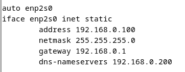
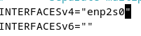
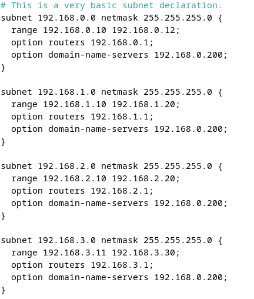

Configuration IP du serveur Linux
On fait la configuration IP du serveur Linux dans le fichier /etc/network/interfaces, on reproduit la capture suivante :
Sur cette capture, on attribue à la carte réseau "enp2s0" une adresse IP, un masque de sous-réseau, une passerelle et le DNS du réseau.
Ensuite, on redémarre le serveur pour appliquer la configuration à l'aide de la commande "reboot".
Ensuite, on installe le service DHCP à l'aide de la commande "apt install dhcpd".
Puis on modifie le fichier /etc/default/isc-dhcp-server pour indiquer sur quelle carte on applique le DHCP.
Pour continuer, on modifie le fichier /etc/dhcp/dhcpd.conf pour donner les plages d’adresses qui seront données par le DHCP (penser à lui donner une plage d’adresses de son réseau, sinon le DHCP ne fonctionne pas).
